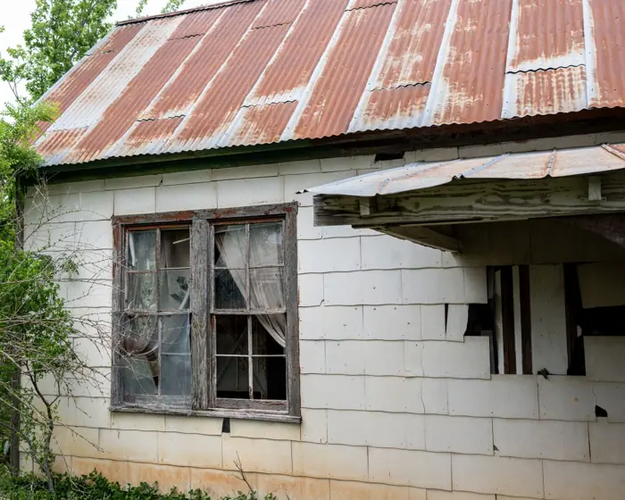

"Speaker Johnson recesses the House early as Rep. Thomas Massie pushes Hegseth impeachment “We’re

1. The Day That Changed the Calendar
On the morning of April 9, Speaker Johnson announced to the House that the chamber would recess for the day. The announcement was brief and delivered over the speaker’s podium, with no accompanying statement from the Speaker’s office explaining the rationale. Members who had been preparing to vote on a series of bills—including a bipartisan infrastructure package and a tax reform measure—were caught off guard. The recess effectively halted all pending business, leaving the House in a state of limbo until the next session.
Shortly after the recess was declared, Rep. Massie took the floor to reiterate his demand for an impeachment inquiry into Hegseth, a former state official who has been accused of financial improprieties. Massie’s speech, which lasted just over three minutes, was punctuated by the refrain, “We’re committed to holding this individual accountable.” He called on the House to move forward with a formal investigation, citing evidence that had been presented to him by several whistleblowers. The timing of his remarks—immediately following the recess—suggests a strategic alignment between the Speaker’s decision and Massie’s agenda. [T2]
2. Speaker Johnson’s History and the Unusual Timing
Mike Johnson has served as Speaker of the House since January 2023, following a controversial election that saw him win the position by a narrow margin over former Speaker Nancy Pelosi. Johnson’s tenure has been marked by a focus on streamlining the legislative agenda and prioritizing conservative policy goals. Historically, he has been cautious about recesses, preferring to keep the House in session to maintain momentum on key bills. His decision to recess early this week is therefore unprecedented and signals a departure from his usual approach.
The timing of the recess—just a day before the House was scheduled to vote on the infrastructure bill—has fueled speculation that Johnson’s move was a tactical response to internal pressure. Some analysts argue that the recess was intended to buy time for negotiations between hardline Republicans, like Massie, and moderates who were wary of an impeachment inquiry that could derail the House’s legislative priorities. Others contend that Johnson was attempting to preserve order amid mounting dissent, giving members a chance to regroup before the next session. The lack of a clear explanation from the Speaker’s office has only intensified the debate. [T3]
3. The Hegseth Impeachment Inquiry: Who Is Hegseth?
The figure at the center of the impeachment inquiry, Hegseth, is a former state treasurer who served in the early 2000s. According to reports, Hegseth was implicated in a series of financial mismanagement allegations that surfaced in 2021. The allegations include the misallocation of state funds, failure to disclose conflicts of interest, and alleged embezzlement of public money. While the allegations have not yet been proven in a court of law, they have been the subject of a state audit that concluded in 2022, recommending further investigation.
Rep. Massie’s insistence on an impeachment inquiry is rooted in his belief that Hegseth’s alleged misconduct represents a breach of public trust that warrants congressional action. He has cited the audit findings and statements from former colleagues who claim that Hegseth’s actions “put the public’s money at risk.” Critics of the inquiry argue that the allegations are politically motivated and that the impeachment process should be reserved for federal officials or high‑ranking state officials with broader national impact. The debate over whether Hegseth’s case merits impeachment has become a microcosm of the larger ideological divide within the Republican caucus. [T1]
4. Procedural Rules and the Power of a Recess
The House of Representatives has a set of procedural rules that govern recesses, including the conditions under which a recess can be declared and the length of time it can last. According to Rule 1 of the House Rules, a recess can be called at any time by the Speaker, provided that the House is not in the middle of a vote or a debate. The Speaker’s authority to recess is absolute, but it is typically exercised sparingly to avoid disrupting the legislative agenda.
Johnson’s decision to recess early raises questions about the strategic use of this power. By recessing the House, Johnson effectively paused all pending business, giving the Speaker a window to negotiate with factions within his caucus without the pressure of imminent votes. The recess also prevented a potential vote on the impeachment inquiry from taking place on the same day, thereby sidestepping a highly contentious debate that could have split the Republican caucus. Whether this was a deliberate attempt to preserve unity or a reaction to mounting pressure remains unclear, but the procedural implications are significant. [T2]
5. The Republican Caucus: Hardliners vs. Moderates
The Republican caucus is not a monolithic entity. Within its ranks, there are factions that differ on priorities, strategy, and the use of procedural tools. The hardline faction, represented by figures like Rep. Massie, is willing to pursue aggressive measures such as impeachment inquiries to hold officials accountable and signal a tough stance against corruption. The moderates, on the other hand, prioritize legislative productivity and view impeachment inquiries as distractions that could derail the House’s agenda.